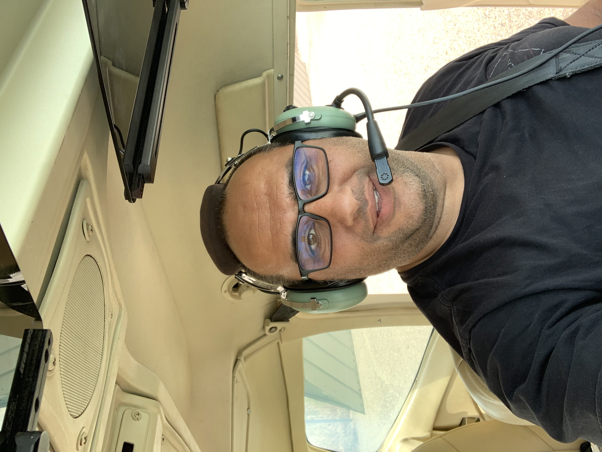

Welcome to Homepage!
My name is Kal, and I hold a Bachelor of Science in Biochemistry, Biomedical science specialty from UC Riverside with a minor in applied statistics. I also hold a degree in mathematics. I have a huge interest in the financial markets, economies. foreign policies, international relations and politics. I have been a stock trader since the age of 21; winning a losing in different exchanges and learning valuables lessons.
I finally broke and decided to join in the action packed technology world and related progamming fields that are important to the financial and tech industries. it is undeniable how much tech and IT are at the center of the 21st Century; everything is digitized and automated now days. Markets with digital and high frequency trading are more lucrative than ever and hard to resist all the FOMO (fear of missing out) around it, The reason why I'm focussing on the backend of things.
Interests & Hobbies
- Economics and Financial markets
- Windsurfing
- Aviation
- Martial arts (Shotokan Karate)
Fun Facts
- Went to high school with a celebrity
- Watched the top five must see aviation movies before learning how to fly
- I've been to every continent on Earth and love Africa
- I share a birthday with my dad and my favorite actor
- Most of all, I love coffee. You must try mine at: (link goes here)
One Last Selfie before Take Off!!

I took this selfie just before taking off for one of my most incredible experiences in my life. That was the day of my very first solo flight. The photo always reminded me of how humbled and satisfied with what I've accomplished. I've always dreamed to be a pilot, and here I am, actively realizing my dream. Also, I took this selfie spontenously and authentically; no filters, no prep or posing, it was just in hte moment, the reason why I think it really speaks volumes on who I am.
I lived many adventures and fought through many more challenges so far. I've learned a lot about myself and I've gained a lot of experience and wisdom. I picked up cool and exciting hobbies. I've also had a carrer where I met really cool people who left me with nothing but great memories and fun stories to tell. You can explore for yourself by navigating through this site or visiting my blog posts; you can also join me and live your dream by sharing your interests and hobbies too in my e-mail news letter. Vistit (link) and sign up for lots and lots of great resources.